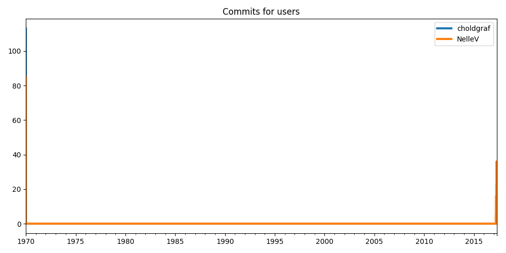

choldgraf vs NelleV¶
This short example shows the number of commits per user across time.
Out:
Updating repository: https://api.github.com/users/choldgraf/events
Params: {'since': None, 'per_page': 100}
Expected object or value
Updating repository: https://api.github.com/users/NelleV/events
Params: {'since': None, 'per_page': 100}
Expected object or value
User Database | 2 Users | 2 projects
from watchtower.handlers_ import GithubDatabase
import matplotlib.pyplot as plt
users = ['choldgraf', 'NelleV']
# Initialize the database
db = GithubDatabase(verbose=True)
# Update users and print the db
for user in users:
db.update(user)
print(db)
# Load the data for plotting
users = [db.load(user) for user in users]
# Now plot pushes each day
fig, ax = plt.subplots(figsize=(10, 5))
for user in users:
counts = user.PushEvent.resample('D').count().iloc[:, 0]
counts.plot(ax=ax, label=user.user, lw=3)
ax.set_title('Commits for users')
ax.xaxis.label.set(visible=False)
ax.legend()
plt.tight_layout()
plt.show()
Total running time of the script: ( 0 minutes 1.447 seconds)